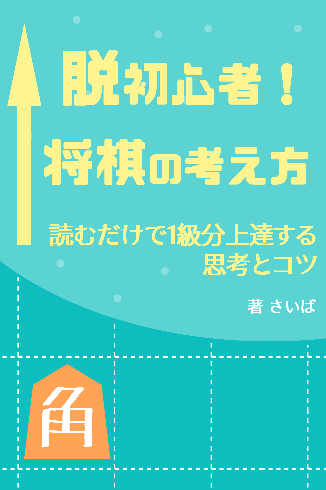
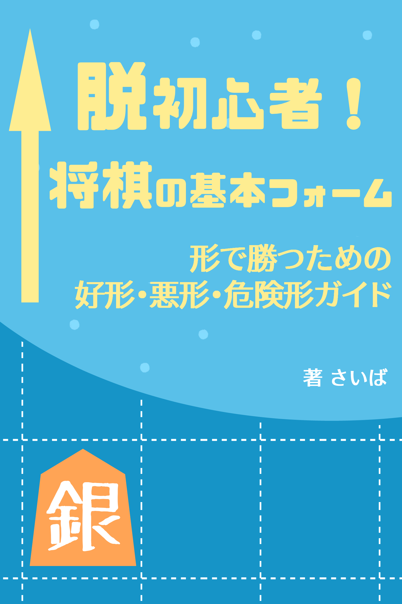
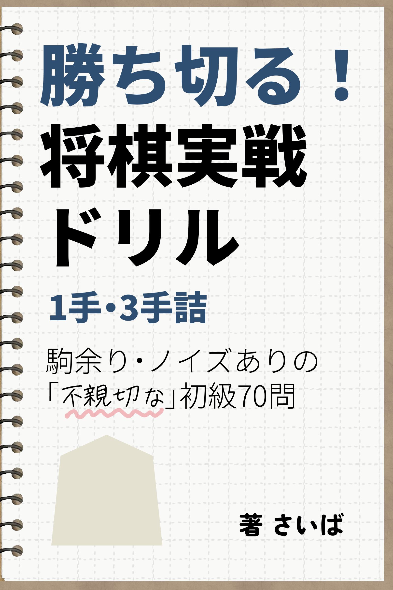

SHOGI BOOKS
将棋本の紹介
Kindle 電子書籍
将棋に入門したけど、なかなかコツがわからない...という方のため、上達に役立つコンテンツを作成しています。
01
脱初心者！将棋の考え方 ―読むだけで１級分上達する思考とコツ―

本の概要
この本では、強くなる喜びを味わって頂けるよう、難しい詰将棋や複雑な知識などの話はせず、とにかく即効性のある考え方を紹介しています。読むために必要な知識は「将棋のルールだけ」——それ以外の将棋の知識や経験は一切不要です。
読むだけで1級分、人によっては2〜3級分強くなれる知識を厳選してお届けします！「前より勝てるようになった」「指し手の意味が理解できるようになってきた」——本書を読めば、指し将棋の世界が面白いものだと感じて頂けるようになるでしょう。
こんな悩みを解決します
- 実戦で何を指せばいいか分からない
- 少し強い人と対局すると、ボロボロに負けてしまう
- 対人戦でなかなか勝てるようにならず、伸び悩みを感じている
- 観る将だけど、プロの手の意味がもう少し分かるようになりたい
この本で得られること
対局に即、使える実践的な知識を収録
- 序盤・中盤・終盤での考え方の切り替え方
- 攻めと守りの基本原則
- 初心者がハマりやすい失敗パターンと対策
- 劣勢からの逆転術
目次
付録１復習テスト
付録２覚えておきたい基本の囲い
02
脱初心者！将棋の基本フォーム ―形で勝つための好形・悪形・危険形ガイド―

本の概要
将棋で「気づいたら負けていた」「どこが悪かったのか分からない…」という経験はありませんか？その原因の多くは"読みの浅さ"ではなく、悪い形を残してしまっていたことにあります。
上級者が当たり前に認識している「基本的な形」を、本書では悪形・危険形・好形の3分類で体系的に解説。形の感覚が身につけば、読みが浅くても崩れにくい将棋が指せるようになります。これまでに類書がほとんど存在しなかった、将棋の「形の総合ガイド」です。
こんな悩みを解決します
- 気づいたら負けていて、どこが悪かったか分からない
- なんとなく指していて形の感覚がない
- 網羅的に基礎を固めたい
- 観る将だけど、もっと内容を理解したい
この本で得られること
形を知るだけで勝率が上がる、即効性のある知識を収録
- 負けにつながる「悪形」を避けられるようになる
- リスクのある「危険形」を事前に察知できる
- 強い人が使う「好形」のパターンが身につく
- 読みが浅くても崩れにくい将棋が指せるようになる
目次
基礎知識将棋用語・棋譜の読み方・考え方の土台
付録１復習テスト
付録２覚えておきたい基本の囲い10選
03
勝ち切る！将棋実戦ドリル 1手・3手詰 ―駒余り・ノイズありの「不親切な」初級70問―

本の概要
「簡単な詰みがあったのに、見逃して逆転負けしてしまった……」将棋を指していて、これほど悔しいことはありません。本書は、従来の詰将棋が持つ「様式美」を捨て、実戦で短い詰みを発見する力を養うことに特化した問題集です。
詰将棋ならではのヒントをあえて削ぎ落とした、「不親切で、よりチャレンジングな」実戦ドリルに仕上げました。
「不親切な」訓練とは？
- 手数の不透明さ：多数の1手詰めの中に、少数の3手詰めをあえて混在
- 視覚的なノイズ：正解に関係のないダミー駒を配置し、選択肢を迷わせる
- 持ち駒の選択：持ち駒を使い切るとは限らない。盤上の駒だけで詰む問題も登場
こんな方におすすめ
- 将棋を始めたばかりで、詰みの手を見逃してしまうと感じている方
- 詰将棋を体験してみたい「観る将」の方
- 隙間時間で、サクッと終盤力を点検したい級位者の方
コンテンツ
基礎棋譜の読み方・詰将棋のルール解説
技詰将棋の基本技（頭金、開き王手など）
問題実戦問題 全70問（徐々に難易度アップ）
コラム詰将棋文化を紹介（双玉問題、曲詰）
著者紹介